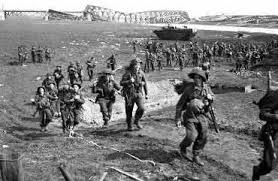

A Segunda Guerra Mundial, iniciada em setembro de 1939, foi a maior catástrofe provocada pelo homem em toda a sua longa história.
Envolveu setenta e duas nações e foi travada em todos os continentes, de forma direta ou indiretamente. O número de mortos superou os cinquenta milhões, havendo ainda uns vinte e oito milhões de mutilados.
É difícil de calcular quantos outros milhões saíram do conflito vivos, mas completamente inutilizados devido aos traumatismos psíquicos a que foram submetidos (bombardeios aéreos, torturas, fome e medo permanente). Outra de suas características, talvez a mais brutal, foi a supressão da diferença entre aqueles que combatem no fronte e a população civil na retaguarda. Essa guerra foi total. Nenhum dos envolvidos selecionou seus objetivos militares excluindo os civis.
Soldados na Segunda Guerra Mundial.
Atacar a retaguarda do inimigo, suas cidades, suas indústrias, suas mulheres, crianças e velhos passou a fazer parte daquilo que os estrategistas eufemisticamente classificavam como "guerra psicológica" ou "guerra de desgaste". Naturalmente que a evolução da aviação e das armas autopropulsadas permitiu-lhes que a antiga separação entre linha de frente e retaguarda fosse suprimida.
Se a Primeira Guerra Mundial provocou um custo de 208 bilhões de dólares, esta atingiu a impressionante cifra de 1 trilhão e 500 bilhões de dólares, quantia que, se investida no combate da miséria humana a teria suprimido da face da terra. Aproximadamente 110 milhões de homens e mulheres foram mobilizados, dos quais apenas 30% não sofreram morte ou ferimento.
Como em nenhuma outra, o engenho humano foi mobilizado integralmente para criar instrumentos cada vez mais mortíferos, sendo empregados a bomba de fósforo, a napalm e finalmente a bomba política de genocídio em massa, construindo-se campos especiais para tal fim. Com disse o historiador R.A.C. Parker: "O conceito que a humanidade tinha de si mesmo, nunca voltará a ser o mesmo".
Adolf Hitler, saudando seu exército.
Enfim a Liga das Nações, órgão instituído para manter a paz entre as nações, não conseguiu cumprir o seu papel, e esfacelou mediante a corrida militarista preparada pelas nações inconformadas pela hegemonia política e militar exercida pelos vencedores da Primeira Guerra Mundial. Sem possuir uma única razão, essa guerra foi consequência do exacerbado desenvolvimento industrial das nações europeias. De certa forma, levando em consideração suas especificidades, a Segunda Guerra parecia uma continuidade dos problemas da Primeira Guerra.
Desta forma, a Segunda Guerra é considerada como uma verdadeira guerra mundial, sendo uma consequência de um conjunto de continuidades e questões mal resolvidas pelos tratados de paz estabelecidos após a Primeira Guerra Mundial. Os confrontos foram divididos entre duas grandes coalizões militares: os Aliados, liderados por Estados Unidos, Inglaterra, França e União Soviética; e o Eixo, composto pela Itália, Alemanha e Japão. Em consequência de suas maiores dimensões, os conflitos foram desenvolvidos na Europa, Norte da África e países do Oceano Pacífico.